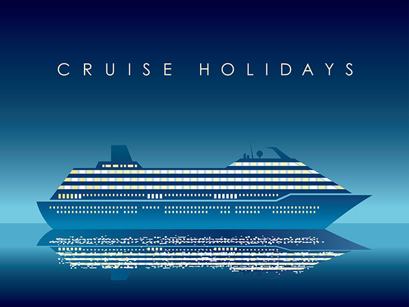
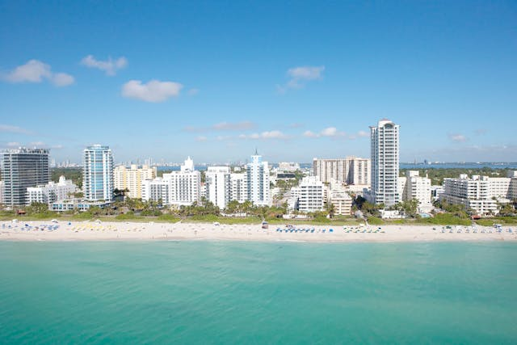
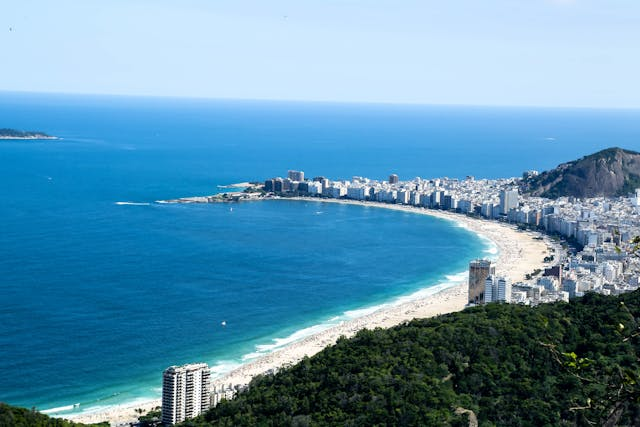
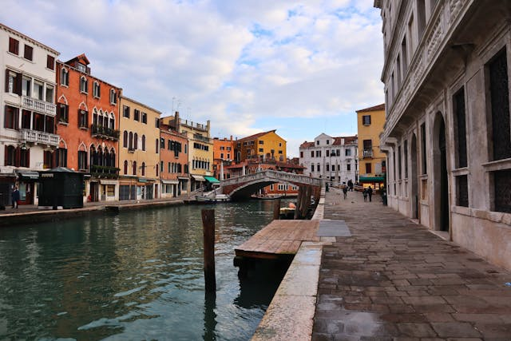
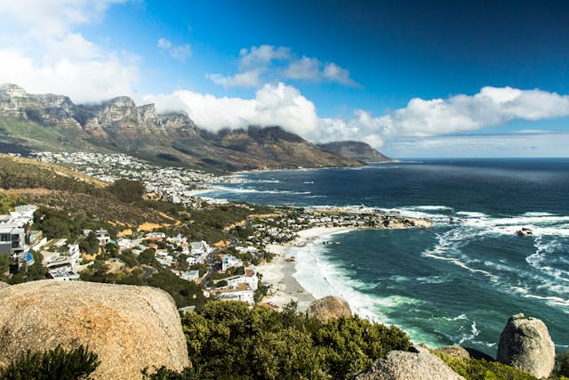
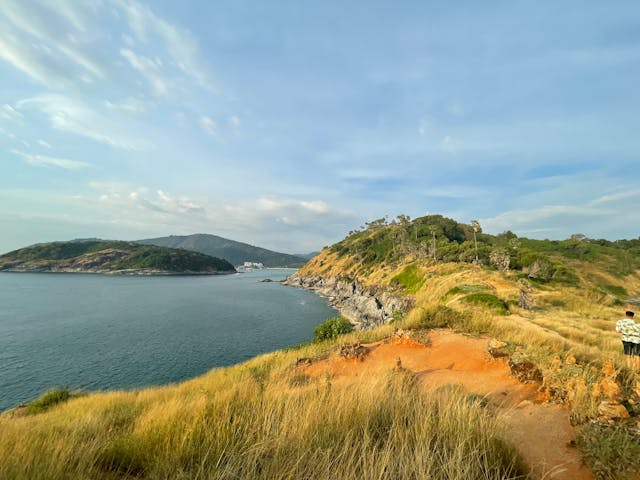
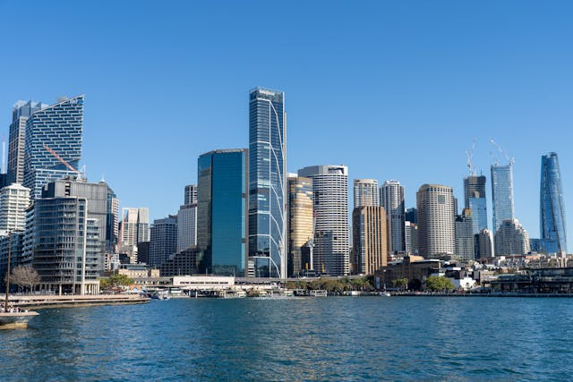

Taking a cruise is incredible!
A cruise offers a unique experience, where adventure meets relaxation. Explore stunning destinations, enjoy life on board, and create memories that last a lifetime.

most sought after destinations






"The world is a book, and those who do not travel read only one page."
Saint Augustine
became interested?
So book your next trip on one of our cruises now